Software · quatro tarefas interativas
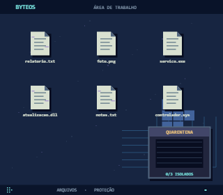
Limpeza de vírus · inicial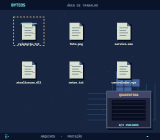
Limpeza de vírus · em operação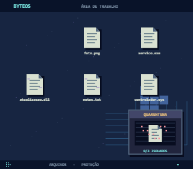
Limpeza de vírus · remoção da ameaça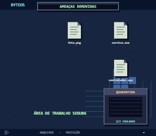
Limpeza de vírus · concluído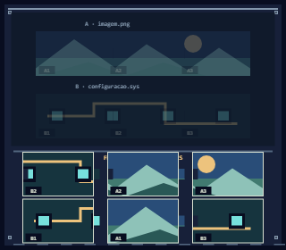
Recuperação de arquivos · inicial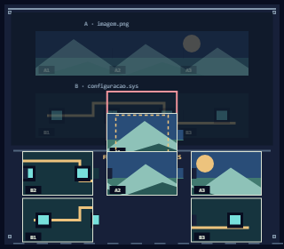
Recuperação de arquivos · recorte incompatível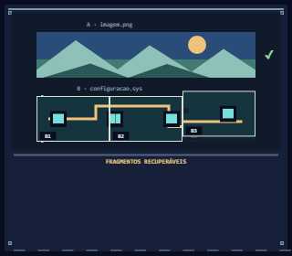
Recuperação de arquivos · em operação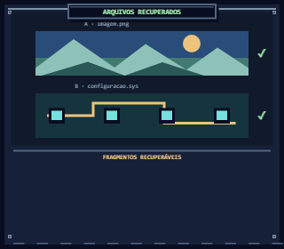
Recuperação de arquivos · concluídoReparo de processos · inicial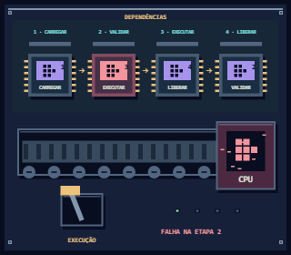
Reparo de processos · falha visível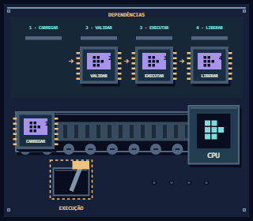
Reparo de processos · em operação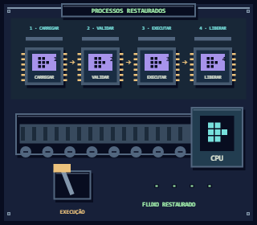
Reparo de processos · concluído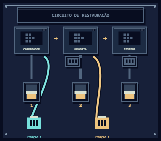
Restauração do sistema · inicial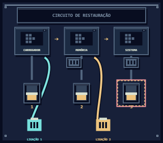
Restauração do sistema · circuito interrompido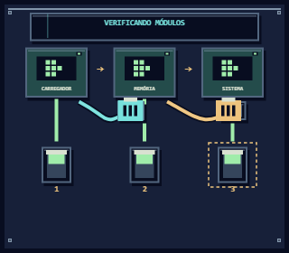
Restauração do sistema · em operação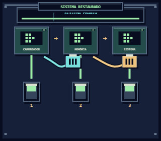
Restauração do sistema · concluído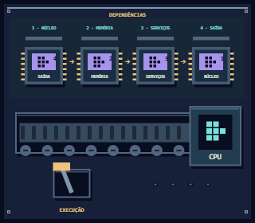
Reparo de processos · inicial · núcleo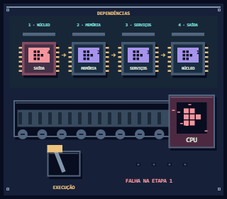
Reparo de processos · falha visível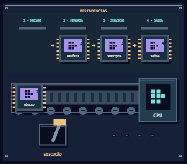
Reparo de processos · em operação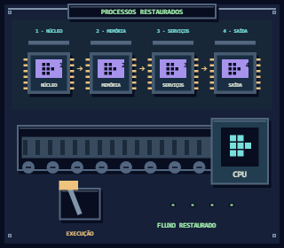
Reparo de processos · concluído